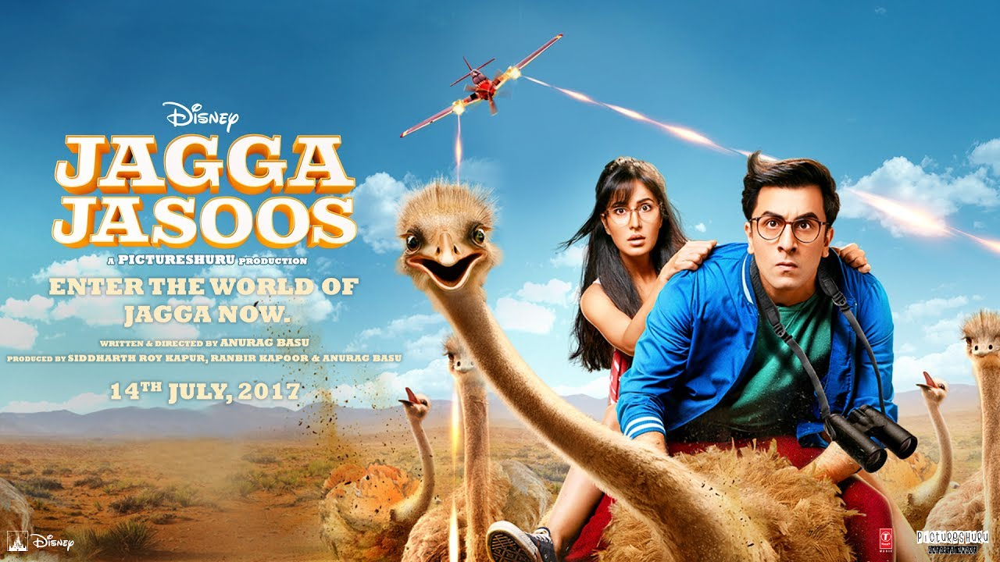

Date of Release : 14 July 2017
Cast :
- Ranbir Kapoor as Jagga
- Katrina Kaif as Shruti
- Sayani Gupta
- Saswata Chatterjee as Jagga's father
- Saurabh Shukla
- Adah Sharma
Description :
Jagga Jasoos (English: Detective Jagga) is an upcoming 2017 Indian musical adventure romantic comedy film written and directed by Anurag Basu, and produced by Basu and Ranbir Kapoor. The film features Ranbir Kapoor, Katrina Kaif and Adah Sharma in lead roles, and tells the story of a teenage detective in search of his missing father. This movie will have around twenty songs says the director. The film is scheduled to be released on 14 July 2017.[1]